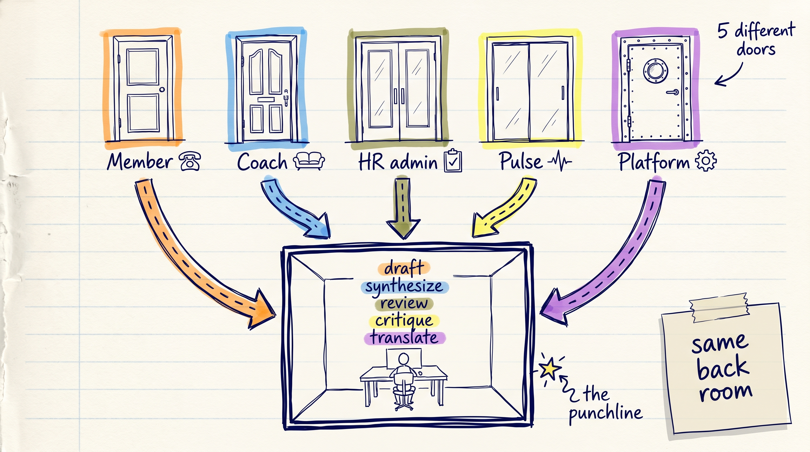

Structured
Prompt Engineering
Move from "the AI gave me a good answer" to "my team can run my prompt without me."
I'm an AI orchestrator.
Three acts.
Detailed times are in your handout. Most of today is your hands on your work — not me talking.
Who's here
I got 5 responses. From those 5, I patternized everything into 5 buttons that I hope cover most of your work.
Today we go back to the foundation — every skill, every agent sits on a prompt that works.
"Why do we need this?"
Three honest questions. Each one has a yes — and a but.
Why don't we just ask AI to write the prompt for us?
For a one-off, you can. "Write me a prompt for X" works fine.
For a prompt your team will run 50 times this quarter, you need the same answer every time. AI writing AI prompts is fine for solo. For team practice, you need a structure your teammate can audit.
AI gets smarter monthly — won't this be obsolete?
Some of it. The "don't invent quotes" rule will matter less when models stop hallucinating.
Tell AI what NOT to do. Check output against a rubric. Write prompts a teammate can run cold. Those are delegation skills. Models change. Delegation doesn't.
Why not just use Skills, Custom GPTs, or buy a prompt library?
You should. Session 2 (May 11) is exactly that. Libraries exist too — some are decent.
A Skill is a structured prompt + knowledge in a deployable wrapper. Without the foundation, you scale a bad prompt fast. And no library knows your team's vocab, your DoD, your compliance scope.
Through-line — prompt practice IS delegation practice. Models change. Delegation doesn't.
5 roles. Same back room.

Click your role. Watch the verbs light up.
Lucky prompt vs team asset
Same task. Same model. Different prompt structure. The gap between the outputs IS the workshop.
Turn this PRD into YouTrack tickets. [paste PRD section here]
Role: senior PO on a wellness platform that ships to YouTrack. Context: WebMD ONE · member consent · HIPAA · 2-week sprints. Task: convert each user story below into one YouTrack ticket. Constraints: - preserve every AC verbatim - mark unknowns [TBC: confirm with PM] - flag PHI lines [COMPLIANCE — HIPAA] Output: markdown table — | # | Title | Description | AC (G/W/T) | Priority | Labels | Flags |
Same model. Same task. Different prompt. That gap is today.
Lucky 1-liner → RCTCO asset
Click each step. Watch the prompt grow. Five clicks separate "lucky" from "asset."
Write user stories for our consent feature.+RYou are a senior Business Analyst reviewing a wellness-platform spec.+CProduct: [PRODUCT] member portal. Users: [USER TYPE]. Regulations: HIPAA + [REGION PDPL]. Source: [SPEC LINK §X.Y].+TDraft [N] user stories with acceptance criteria for the [FEATURE] flow.+CnDo NOT invent regulations. Do NOT paraphrase AC — verbatim only. Cite spec §X.Y per story. Flag PHI lines [COMPLIANCE — HIPAA]. Mark unknowns [TBC: confirm with PM]. Mark guesses [ASSUMPTION].+OMarkdown table. Columns: Story | AC (Given/When/Then) | Spec ref | Flags. One row per story. Each row independently reviewable.
Same task. Five clicks. Lucky → asset.
Coach does these 5 clicks for you in 30 sec — but you had to see the move once.
All frameworks rhyme
Different acronyms. Same five questions. Prompting is delegating. Good delegation asks the same questions — whether the assignee is human, agent, or AI.
Stop arguing about frameworks. Learn the delegation pattern. The acronym is just the wrapper.
5 tests every prompt must pass
Skip one slot of RCTCO → fail one test. Each slot defends one test.
Can my teammate run this and get the same shape — without asking me a question?
Did the AI stay inside what I asked, or did it invent things?
Can I check if the output is correct, or is it just vibes?
Can I run this same prompt next sprint, only changing 2–3 inputs?
If a regulator asks "where did this come from" — can I show the trail in 60 seconds?
For healthtech / HRtech — Auditability is the test that breaks AI use. Most teams skip it and find out the hard way.
The 3-turn iteration loop
Most people throw away output and start over. Wrong move. Three turns get you 10× the result for 2× the time.
Turn 2 is just the AI grading itself against the 5 tests. Pick 2–3 tests per turn 2 — depends on your domain.
The 5 shapes underneath
5 different tasks in this room. 5 patterns — same shape, different content. Name the pattern → know the prompt.
Draft new content
PRDs, user stories, copy. Mark every assumption [TBC].
stories + AC · ticket draftsSynthesize many inputs
Cluster interviews / docs / threads. Cite source IDs. No fake quotes.
interview synthesis · research dotsScore against criteria
Existing work + your rubric. Severity-tagged findings, row by row.
spec review · DR coachingFind what could go wrong
A plan, no rubric. Adversarial — edge cases, failure modes, missing scenarios.
pre-launch stress-testsTranslate format / audience
PRD → tickets. Tech → patient-facing. Preserve meaning, change shape.
PRD → YouTrack ticketsReviewer vs Critic — both find problems, different jobs. Reviewer asks "does this meet the bar?" against an existing rubric. Critic asks "what could break?" against an unproven plan. Different prompts, different patterns.
Open your assistant
Coach is your workshop tool for the next 3 hours. Three install paths — pick the one that fits your Claude account.
1 · Skill
Upload the skill .zip to Claude. Toggle on. Done.
2 · Project
Build a Claude Project from our zip. We walk you through.
3 · Paste-block
Copy a big block. Paste as message #1 in any new chat.
After the break — your turn. 80 minutes on your real task.
Your turn — with your assistant
21 of you. 21 Prompt Coaches running in parallel. Coach scores. I steer.
You paste a bare task
"Help me write a prompt that turns my PRD into YouTrack tickets." Coach asks 5 RCTCO questions tailored to your task. You answer. Coach assembles + audits.
You paste a drafted prompt
"Score this prompt: You are a senior PO..." Coach scores 1–5 on each of 5 tests. Total /25. Names 2 highest-impact fixes.
You paste an output that disappointed you
"AI gave me this and it's wrong: ..." Coach traces failure to the missing RCTCO slot. Gives the exact constraint to add.
You paste raw team notes
"Format this as a context card: vocab — member not user; DoD — AC in G/W/T..." Coach formats your raw notes into a saveable Context Card markdown.
You paste a finished Context Card
"TEAM CONTEXT — Vocab: member not user. DoD: AC in G/W/T..." Coach loads your team standards. Every later prompt is scored against them too.
Coach never runs your prompt for you. It coaches the prompt. You run it in another tab. That separation is the discipline.
Pick your pattern. Build with Coach.
- Pick the pattern that fits your real task — draft / synthesize / review / critique / translate
- Open Coach. Paste your bare task in 1-2 lines.
- Coach asks 5 RCTCO questions. Answer them honestly.
- Coach assembles your prompt.
- Save as artifact — paste in chat: "put this prompt in an artifact called
r1-prompt.mdso I can edit it across rounds." - Type "R1 done · artifact saved" in chat.
Audit. Score /25. Fix.
- Input: your
r1-prompt.mdartifact from R1 (or paste from chat). - Ask Coach: "audit r1-prompt against the 5 tests."
- Coach scores /25 + names 2 fixes + emits a FIXED PROMPT block.
- Ask: "update the r1-prompt artifact with the FIXED PROMPT." Coach overwrites in place.
- Re-audit. Repeat until score is 18+/25.
- Type "R2 [score] · artifact at v2" in chat.
Inject your team. Score → 22+.
- Input: your
r1-prompt.mdartifact from R2 (now at 18+/25). - Open a fresh chat with Coach (clean context for R3).
- Build your Context Card (right →) — vocab, DoD, 1 example. Two paths:
- Solo: use the right-column reference + deep-dive link to fill by hand.
- With Coach: dump raw notes, ask "format this as a Context Card I can save".
- Ask Coach: "put this Context Card in an artifact called
team-context-card.md." - Paste your R2 prompt + ask: "score r1-prompt with team-context-card applied." → goal 22+/25.
- Ask Coach to update
r1-promptwith any final fixes. - You walk out with TWO artifacts — your prompt + your Context Card. Both reusable forever.
- Type "R3 [score] · 2 artifacts" in chat.
Share your prompt. Room learns from each other.
High score (22+)
Paste R3 prompt + score in chat. Walk us through your 3 injects. Room reads. One Q from the room.
"Mine is below 18 and I want help"
Brave volunteer. Tony pastes their prompt into Coach on screen, audits live. Room watches the move.
Watching someone else's prompt audited — you see your own gaps in their prompt. That's why we share, not lecture.
You've been using a Claude Project all morning
Prompt Coach = a Claude Project. System prompt + knowledge files + share link. The same pattern works for ANY repeated workflow on your team.
Paste 5 slots, every chat
- Re-paste Role + Context every time
- Teammate forgets one slot → different output
- Knowledge docs not attached → AI guesses
- No shared baseline
Slots locked. Inputs vary.
- Role + Constraints + Output = system prompt (locked)
- Knowledge files = your team's vocabulary, templates, regs
- Teammates open one link, get the same shape every time
- Reproducibility test passes by default
Coach was your training wheels. Build your own Project this week — for PRD review, for pulse-survey synthesis, for ticket translation. One per recurring task.
Where good prompts live
A Project belongs to one team. A repo belongs to your whole company. Same four properties your code and specs already have — applied to prompts.
Versioned
Today: git history for code & specs.
Prompts: prompts/reviewer.md committed, semver-tagged.
Reviewable
Today: code review & PRs.
Prompts: "What failure mode does this defend?" PR template.
Discoverable
Today: README + folder structure.
Prompts: prompts/README.md + folder per pattern.
Releasable
Today: tagged versions.
Prompts: v1.0 before audit, v1.1 after harvest.
Plain-Git is durable. SaaS comes when you outgrow markdown. Start where your team already is.
The ladder
Same pattern, four rungs. Each rung tests harder than the last.
Prompt
RCTCO + 3-turn loop. Passes 2-3 of 5 tests on its own.
Project
Same prompt + locked knowledge + shareable. Passes Reproducibility + Reusability.
Repo
Your team's prompts/ folder. Versioned, reviewable, owned. Where prompts become infrastructure, not experiments.
Skill
Claude Code triggers your prompt automatically on keywords. Passes all 5 tests.
By Repo, your prompts survive without you.
By Skill, they run without you.
4 things in your pocket. Forever.
Prompt Coach
Same Coach you used today. Open Monday, paste your next real task. Yours forever.
link in emailYOUR team's voice
The card you filled in Round 3. Vocab + DoD + 1 example. Paste before any prompt — instant team-asset quality.
save it forever1-page reference
5 patterns · RCTCO · 5 tests · 3-turn loop. Print it. Pin it. Pass it to a teammate.
PDF in emailFor your tech lead
Bring prompts/ folder to your tech lead Monday. The team-asset move is real.
If you leave without all four — the session failed. That is my contract with you.